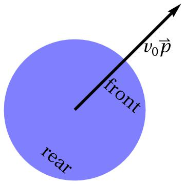

- Active particles are micron-sized particles using chemical energy to achieve propulsion
- Here, we have a look at self-propelled particles (for simulations this just means that they have fixed intrinsic speed \(v_0\) but variable orientation \(\mathbf{p}\))
- Particles could, for example, be microswimmers like bacteria or catalytic (and therefore self-propelled) colloids
